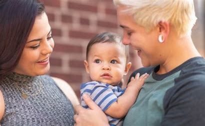

O processo de adoção no Brasil é regulamentado pelo Estatuto da Criança e do Adolescente (ECA) e tem como objetivo assegurar que a criança ou adolescente encontre um lar amoroso e seguro. Veja abaixo as etapas principais:
Habilitação e Cadastro dos AdotantesInscrição: Interessados devem procurar o Juizado da Infância e da Juventude para se inscrever no Cadastro Nacional de Adoção (CNA).
Documentação Necessária: É preciso apresentar RG, CPF, comprovante de residência, certidão de nascimento/casamento e comprovantes de rendimentos.
Avaliação Psicossocial: Uma equipe técnica avalia a condição psicológica, social e econômica dos candidatos, por meio de entrevistas e visitas domiciliares.
Inclusão no Cadastro: Se aprovados, os adotantes são incluídos no cadastro, onde aguardam uma criança com o perfil desejado.
Espera por uma Criança ou AdolescenteDefinição de Perfil: Os adotantes podem definir preferências (idade, condições de saúde, aceitação de irmãos, entre outros).
Tempo de Espera: Pode variar de acordo com o perfil desejado. Perfis mais específicos tendem a prolongar o tempo de espera.
Apresentação e Período de ConvivênciaPrimeiro Encontro: Uma vez identificada uma criança com o perfil compatível, o juiz autoriza a apresentação aos adotantes.
Convivência Supervisionada: Inicia-se um período de convivência supervisionado, com encontros em ambientes seguros e acompanhamento de uma equipe técnica para avaliação do vínculo.
 Guarda ProvisóriaMudança para o Lar Adotivo: Se o período de convivência for positivo, o juiz pode conceder a guarda provisória, permitindo que a criança vá morar com os adotantes.
Acompanhamento: Durante essa fase, a família é monitorada para avaliar a adaptação do adotado ao novo lar.
Adoção DefinitivaSentença de Adoção: Caso a adaptação seja satisfatória, o juiz emite uma sentença definitiva, formalizando a adoção.
Nova Certidão de Nascimento: A criança recebe uma nova certidão de nascimento com o nome dos pais adotivos e sobrenome da nova família.
Fim do Vínculo com a Família Biológica: Após a formalização, o vínculo com a família biológica é desfeito.
Acompanhamento Pós-Adoção (opcional)Em alguns casos, há um acompanhamento pós-adoção para apoiar a adaptação do adotado e da nova família, especialmente quando envolve crianças mais velhas.